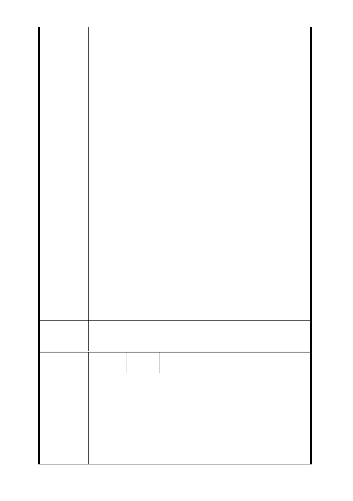

的公寓，結構仍十分完好，其餘屋齡三十年以上的公寓均有
固定修繕，並未達到破損老舊需要都市更新的情況，且相較
附近其他建物更無更新之必要性，請問台北市政府捷運局一
意孤行聯合開發的目的為何？
三、居民絕大部分均為自住戶，聯合開發後反而無法繼續居
住：
依兩次捷運局舉辦的說明會，若為五樓公寓住戶聯合開發後
的新房，實際可居住面積只剩原來的五分之二，例如：三十
坪變為十二坪，在大部分住戶為三代或兩代同堂，且居住坪
數已不大的情況下，請問政府為何剝奪老人家三代同堂和樂
融融、含飴弄金孫的樂趣？您能體會老人家被迫搬到陌生環
境孤獨寂寞的那種感覺？您覺得年輕人被迫改住這樣狹小的
居住空間還敢生小孩嗎？我們是自住戶。不是投資客，居住
空間大小是我們唯一的考量，房屋價值對我們無任何意義。
四、無論土地徵收或聯合開發，絕大部分住戶均無力負擔後
續：
在大部分住戶收人不高的情況下，徵收後我們根本無力另購
新屋，只能被迫租屋到老死，即便無奈參與聯合開發，我們
也沒錢補足零數坪差價，只能再次被迫換更小的新房，也沒
錢做最基本的裝溝，當初政府希望老舊社區都市更新的良善
美意，反而造成老舊社區住戶不可承受的經濟負擔。
希望臺北市都市計畫審議委員會委員，您千萬不要讓政府的
公權力與都市更新的善意變調，不但沒有如預期的幫助並改
善我們的生活環境，反而因現行法律條文缺漏，我們必須被
迫搬遷且因無力承擔北市、新北市超高房價，造成我們一輩
子流離失所，甚或住戶一家老小發生不忍言之事。
我們所有住戶一致訴求：
建 議 辦 法 絕不接受政府聯合開發或徵收的條件，請把捷運站體與出口
遠離我們家園，移往機關或交通用地。
市府回應
意見
同編號捷五－1 回應意見。
委員會決議 同編號交一－1 委員會決議。
編
號
捷五-55
陳情人
LG03 捷五預定開發用地住戶自救會等 89
人（101 年 5 月 31 日、102 年 8 月 2 日）
102.8.2
主旨：重申全面反對萬大線 LG03 站萬大路、西藏路交叉口東
北側（捷五用地）變更為聯合開發區（捷）。
建議：
陳 情 理 由 將捷運出入口縮至最小面積，設置於加寬停車格，請比照蘆
洲線東門站 1 號出入口， 2. 4 米寬單向電扶梯的設計，如果
（評估不可行），那就單邊設出入口於南側，取消北側出入口
（附圖說明）請查照。
說明：
- 89 -